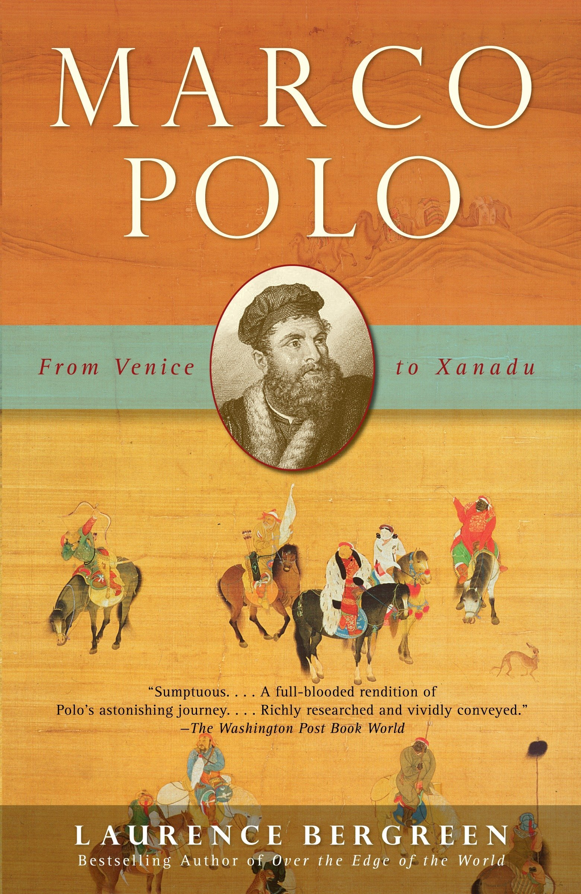
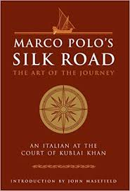

Marco Polo
Marco Polo (/ˈmɑːrkoʊ ˈpoʊloʊ/ (About this soundlisten), Venetian: [ˈmaɾko ˈpolo], Italian: [ˈmarko ˈpɔːlo]; 1254 – January 8–9, 1324)[1] was an Italian[2] merchant, explorer, and writer, born in the Republic of Venice.[3][4][5][6] His travels are recorded in Livre des merveilles du monde (Book of the Marvels of the World, also known as The Travels of Marco Polo, c. 1300), a book that described to Europeans the wealth and great size of China, its capital Peking, and other Asian cities and countries.
Marco learned the mercantile trade from his father and his uncle, Niccolò and Maffeo, who travelled through Asia and met Kublai Khan. In 1269, they returned to Venice to meet Marco for the first time. The three of them embarked on an epic journey to Asia, returning after 24 years to find Venice at war with Genoa; Marco was imprisoned and dictated his stories to a cellmate. He was released in 1299, became a wealthy merchant, married, and had three children. He died in 1324 and was buried in the church of San Lorenzo in Venice.
Though he was not the first European to reach China (see Europeans in Medieval China), Marco Polo was the first to leave a detailed chronicle of his experience. This book inspired Christopher Columbus[7] and many other travellers. There is substantial literature based on Polo's writings; he also influenced European cartography, leading to the introduction of the Fra Mauro map.
Images


